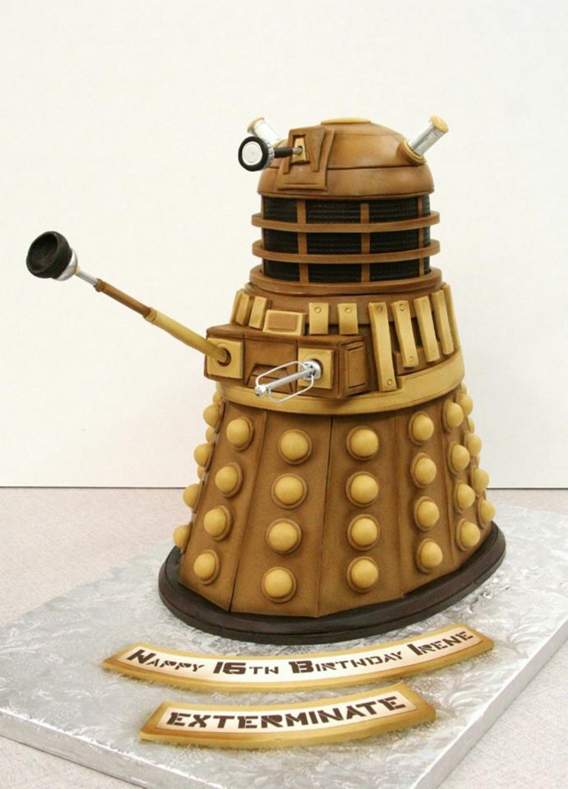

Dalek Cake

Are you a fan of the Doctor Who episode "Victory of the Daleks" and those menacing Dalek creatures? If you've ever wanted to create a cake that is both delicious and terrifying, then this recipe for a Dalek Cake is for you! This cake is sure to impress any Doctor Who fan and is perfect for a themed party or celebration. So, grab your whisk and let's get started on this tasty and daring baking adventure!
Ingredients
- 2 cups all-purpose flour
- 2 cups sugar
- 3/4 cup unsweetened cocoa powder
- 2 tsp baking soda
- 1 tsp baking powder
- 1 tsp salt
- 1 cup buttermilk
- 1/2 cup vegetable oil
- 2 large eggs
- 2 tsp vanilla extract
- 1 cup hot water
Instructions:
- Heat the oven to 350°F (175°C). Grease and flour a 9-inch round cake pan.
- In a large mixing bowl, combine the flour, sugar, cocoa powder, baking soda, baking powder, and salt.
- Add the buttermilk, vegetable oil, eggs, and vanilla extract to the bowl and mix well.
- add in the hot water, mixing until the batter is smooth and well combined.
- Pour the batter into the prepared cake pan and bake for 30-35 minutes, or until a toothpick inserted into the center of the cake comes out clean.
- Allow the cake to cool completely in the pan before removing it and transferring it to a wire rack.
For the frosting:
- In a large mixing bowl, beat the softened butter until creamy.
- Gradually add in the powdered sugar, mixing well after each addition.
- Add the vanilla extract and heavy cream, and continue to beat the mixture until it's light and fluffy.
Divide the frosting into three separate bowls.
- Add black food coloring to one bowl, red to another, and blue to the third. Mix well until you have the desired colors.
Assembly:
- Once the cake is cooled, use a serrated knife to level the top of the cake if necessary.
- Spread a layer of black frosting over the top and sides of the cake.
- Use a piping bag and the red frosting to create the Dalek's "eye stalk" in the center of the cake.
- Use the blue frosting to create the Dalek's "gun" on one side of the cake.
- Finally, use a small, round cookie cutter or the back of a piping tip to cut circles out of fondant or white chocolate, and use these to create the Dalek's "bumps" on the sides of the cake.
Your Dalek Cake is now complete and ready to impress all your Doctor Who-loving friends! This cake is sure to be a hit at any Doctor Who-themed event or party, and it's a delicious way to pay tribute to the iconic Dalek creatures. So, go ahead and give it a try – just be careful not to let the Daleks exterminate your taste buds!
Return back